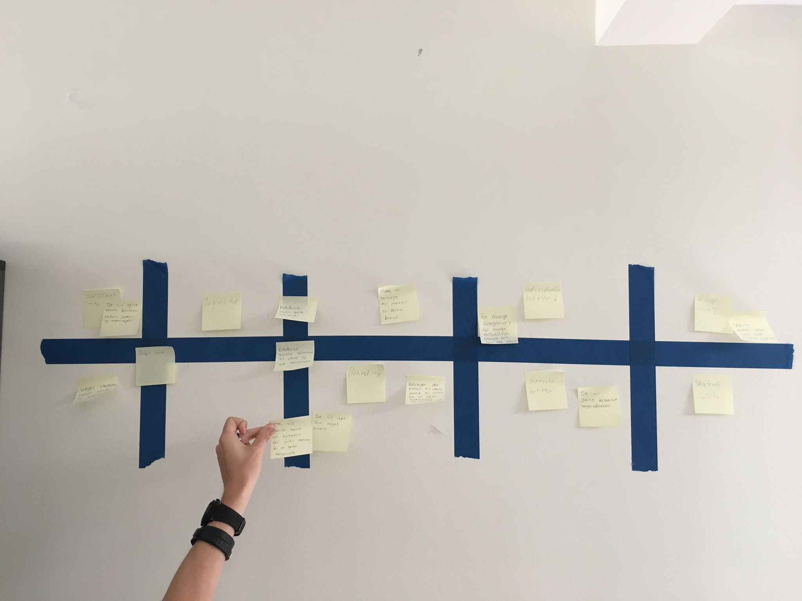
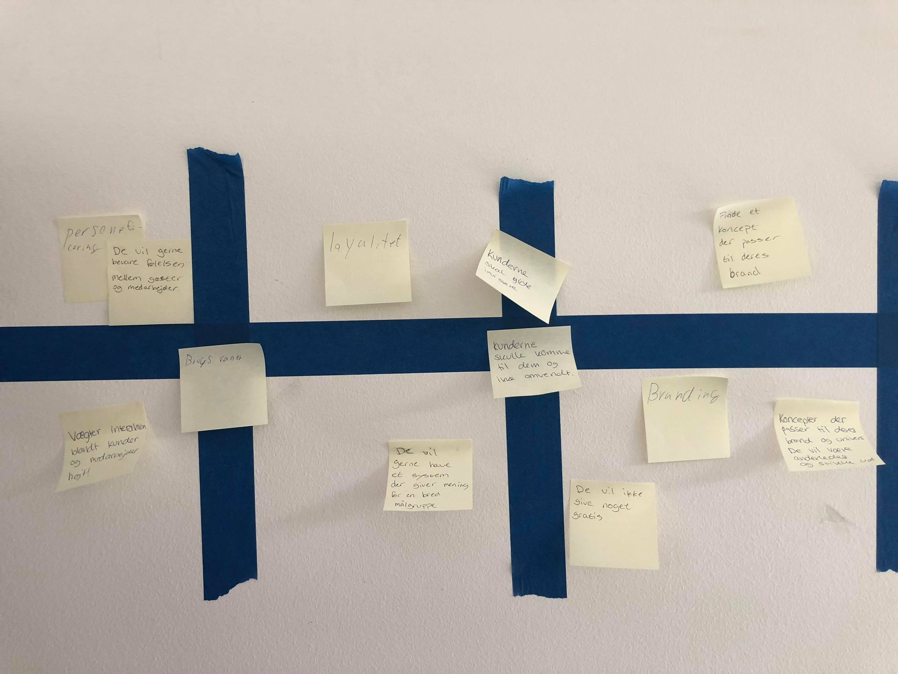

Experience Map
Her ses det experience map med de problem stillinger som vi er nået frem til.
 På det fokuserede map, kan man se de 3 problem-kategorier vi ville fokusere på:
- Personificering: Det er man som kunde altid oplever menneskelig kotakt når man er på deres juice bar.
- Loyalitet: Det er man som kunde gerne vil komme igen når man har været på Joe's.
- Branding: Det at man som firma kan komme ud med deres brand, og vise sine gode værdier frem.